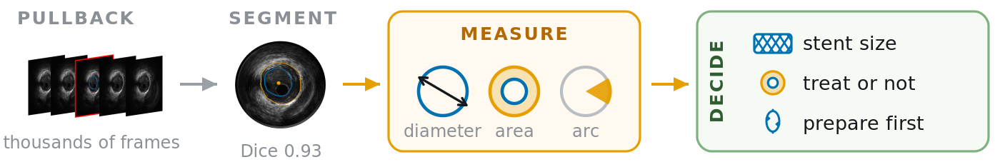
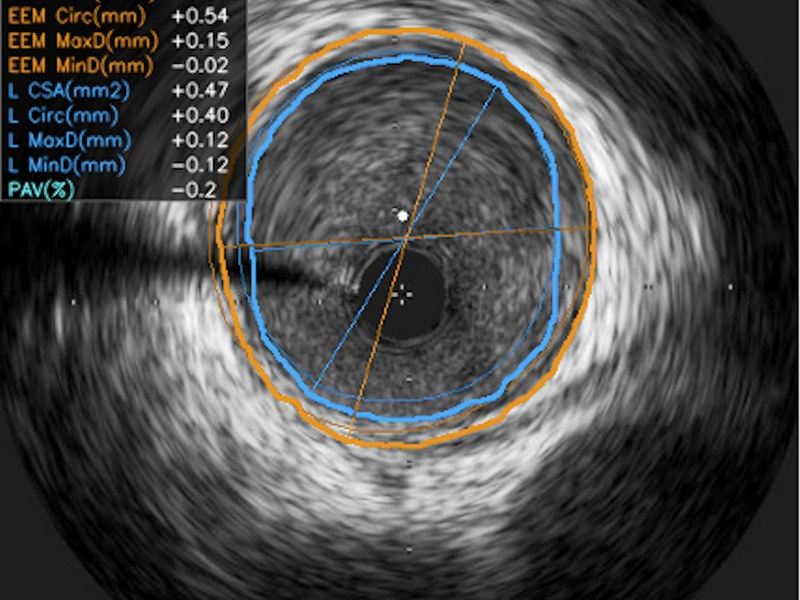
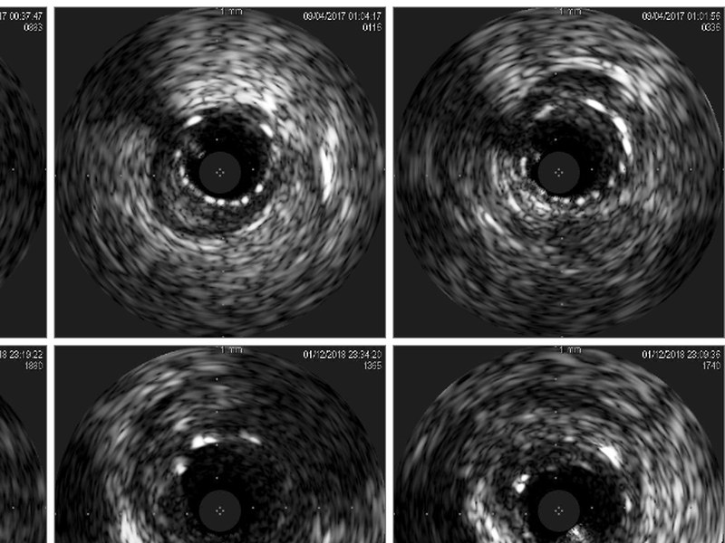
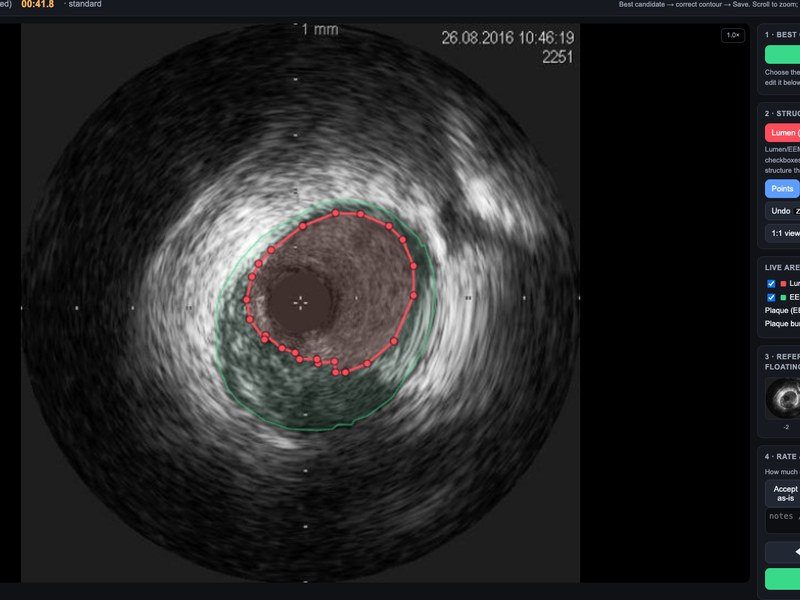

Yunshu Chen · PhD candidate · Monash Medical AI
I build medical imaging AI for
real clinical use.
Open to research and ML engineering roles · Melbourne · PhD completing April 2027
01 / From a scan to a decision
Coronary IVUS: one chain, three projects

-
Segment & measure
GeoCat
84%
agreement with expert adjudication on the treatment threshold
Not pixel overlap, the decision itself. Two papers under review.
-
The data underneath
IVUS-FM
49.6M
frames pre-trained on, from 28,753 pullbacks, 13 years and two vendors
Fine labels come from the one platform that can produce them, targeting the ~74%-share platform that cannot.
-
Decide
IVUS Agent
0 numbers
in the report come from the language model
An LLM plans and narrates over deterministic tools. Local Qwen2.5-7B for privacy; 35 cases clinician-reviewed.
02 / By the numbers
Three years, what came out of them
- 3first-author papers under review
- 8M+cell instances segmented at 89% mAP, deployed as a production tool
- 3×faster on CPU after distillation, so it runs where there is no GPU
- 135experiments logged across 6 projects since March 2026
03 / Selected work
Twelve projects, in three tiers
Coronary IVUS
03.1 · THREE PROJECTS, ONE CHAIN
-

Under reviewGeoCat
Segment & measure
- 84%agreement on treatment threshold (κ 0.67)
- 0.94–0.96CCC vs expert measurement
- 0.97–0.99AUROC, calcium threshold
- 0.922–0.930Dice, patient-disjoint 5-fold
-

In progressIVUS-FM
The data underneath
- 49.6Mframes pre-trained on
- 28,753pullbacks
- 13 yrsof clinical acquisition
- 4levels of supervision
-

Agentic clinical AIIVUS Agent
Decide
- 0numbers generated by the model
- 8decision tools, ESC-guideline cited
- 35cases reviewed by clinicians
- LocalQwen2.5-7B + vLLM, on-premise
Microscopy & cell imaging
03.2 · SAME QUESTION, DIFFERENT SCALE
-
SAM2 memory as a tracking linker
CHOTA 0.8603
-
LeadCell, a cell foundation model
8M+ instances · 89% mAP
-
Cell size × resolution benchmark
19 datasets × 9 frozen models
-
Confidence-Adaptive Trimap
Under review
-
Physically-grounded synthesis
11 priors × 5 domains
Tools & infrastructure
03.3 · WHAT THE PAPERS STAND ON
-
Genius Labbook github.com/CHEN-Yunshu/Genius_Labbook
-
Cell_Collection github.com/CHEN-Yunshu/Cell_Collection
-
Acute ischemic stroke outcome prediction
-
Pre-training and evaluation infrastructure
04 / Papers
Three first-author submissions under review
-
From Pixels to Decisions: Validating Deployable Coronary IVUS Analysis at the Level That Informs Treatment
-
Clinically Aligned Geometry Constraints for Robust IVUS Vessel Boundary Segmentation
-
Confidence-Adaptive Trimap for Boundary-Precise Zebrafish Myotome Segmentation
-
Efficient Conformer-Based CTC Model for Intelligent Cockpit Speech Recognition
In preparation
- IVUS journal extension
- IVUS foundation model
- Cell size × resolution benchmark
- Field-mediated morphodynamics
- SAM2-as-linker cell tracking
Awards
05 / Experience
Two tracks, one body of work
-
As a researcher
-
As an engineer
Research
Jun 2025 – Present
Coronary IVUS segmentation and clinical measurement validation
Mar 2026 – Present
Ultrasound foundation model
2026 – Present
LLM-orchestrated clinical decision support
Feb 2025 – Feb 2026
Multi-scale cell instance segmentation foundation model
Apr 2024 – Present
Cell tracking and zebrafish myotome segmentation
Industry
Jul 2022 – Dec 2022
Speech Recognition Algorithm Engineer, Intern (Full-time), NIO
Mar 2022 – Jul 2022
Research Intern, Institute of Psychology, Chinese Academy of Sciences
Education
Oct 2023 – Apr 2027
PhD, Data Science & Artificial Intelligence, Monash University
Feb 2019 – Jun 2023
BAdvComputing (Honours II-1), The University of Sydney
Teaching & service
Jul 2025 – Present
Teaching Assistant (Sessional Academic), Monash University
2021 – 2022
General Executive, 94th SRC & Student Member of Academic Board, The University of Sydney
Technical skills
Machine learning
LLM & agents
Medical & bio imaging
Validation & statistics
Data & MLOps
Software
Languages
06 / Contact